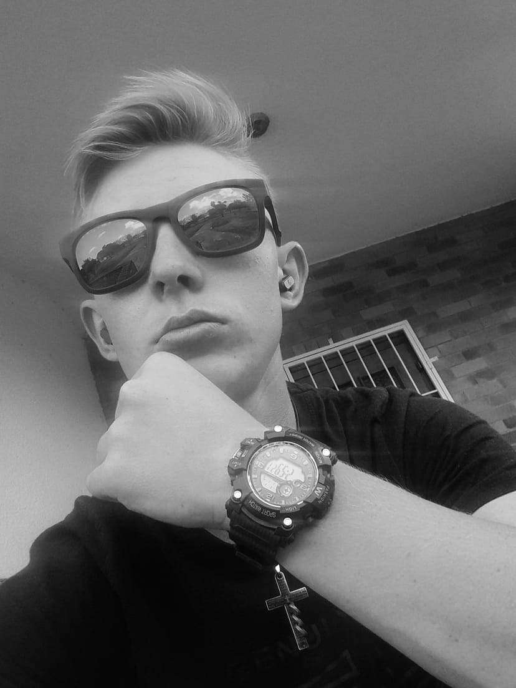

About Me

Hi, I'm Francois Groenewald, a 23-year-old website designer with a passion for creating visually appealing and functional websites. As an introvert, I thrive in quiet, focused environments where I can tap into my creativity and bring ideas to life. With a strong background in HTML, CSS, and Python programming, I deliver high-quality website design solutions that meet the needs of my clients. My expertise in SEO analysis ensures that the websites I design are optimized for search engines and reach their target audience. I'm also proficient in graphic design using Canva and have experience working with WordPress, allowing me to bring a wide range of skills to the table.
My goal is to create websites that not only look great but also provide a seamless user experience. I believe that a well-designed website is more than just a pretty face - it's a powerful tool that can help businesses and individuals achieve their online goals. Whether you're looking for a simple website or a complex web application, I'm dedicated to delivering high-quality solutions that meet your needs.
I'm passionate about finding creative solutions to complex problems and enjoy working with clients to understand their vision and goals. When I'm not designing websites, you can find me exploring new design trends, learning new skills, or getting lost in a good book. If you're looking for a dedicated and skilled website designer who can help bring your vision to life, I'd love to hear from you!
.png)
.png)